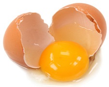

Egg

|
Eggs pack more nutrients per calorie than the vast majority of other foods, and they are an inexpensive and delicious source of protein. It’s no wonder that they’ve become a breakfast staple, but if you’re thinking about cracking open an egg that’s past its expiry date, think again. Expired eggs are one of the most common causes of foodborne illness. Eating them can cause mild symptoms ranging from abdominal discomfort, gas and diarrhea to full-blown food poisoning.
In the United States, egg packing companies are not required by law to provide an expiry date, but they must stamp the date at which the eggs were packed onto every carton. If you store your eggs in the refrigerator, you can safely eat them for up to four weeks after they were packed. However, leave them any longer and you’ll be increasing your risk of upsetting your stomach or worse. |
Deli Meat
|
We hear so many news stories about E. coli and Listeria bacteria in processed deli meats. These bacteria are prevalent in both prepackaged deli meats, and in the sliced variety you ask your butcher to prepare for you at your grocery store’s deli counter. As a general rule of thumb, deli meats are best consumed within three days of the date of purchase. Under no circumstances should you eat deli meats that are more than a week old.
Listeria bacteria is particularly dangerous, as the form of food poisoning it causes can be fatal in extreme cases. From a general standpoint, it’s probably best to steer clear of processed deli meats altogether, as they also tend to be very high in nitrates. Nitrates have been linked to a long list of health problems, including certain forms of cancer. If you do keep deli meat as part of your diet, choose fresher, natural, nitrate-free alternatives and eat it promptly. |
Mixed Green

|
Mixed greens including baby spinach, arugula, spring mix, packaged salad lettuce and other leafy veggies, don’t keep very well after their due date. So if their wilted appearance and slimy coating and doesn’t turn you off, think about the bacteria and pathogens lurking beneath your sandwich bread. While these products are sterilized and safe for consumption if you eat them promptly, they can very quickly become covered in disease-inducing bacteria.
Carefully check the best-before date before you open the package, and use safe storage guidelines to help keep your mixed greens fresher for the longest possible period. If you’re going to keep them in the bag they came in, roll it down to seal off the opening, and add a clothespin or elastic band to prevent oxygen from entering. Better yet, keep them in a sealed, airtight container and eat them within 48 hours of opening the package. |
|
This information is excerpted from: http://www.activebeat.com/diet-nutrition/10-foods-you-should-never-eat-past-their-expiry-date/ |